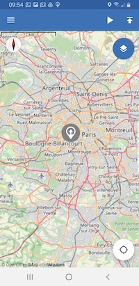
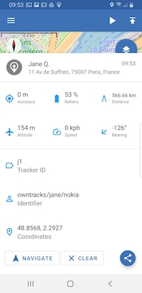
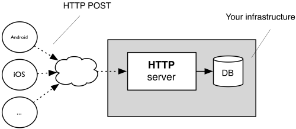

What OwnTracks does
The OwnTracks app runs in the background on your Android or iOS device and waits for the smart phone to tell it that the device has moved, whereupon OwnTracks sends out a message with its current coordinates (and a few other details we'll discuss in a moment, but these screenshots might whet your appetite).
|  | |  |
We'd like you to read this bit again: waits for the smart phone to tell it that the device has moved.
It is very important to understand that OwnTracks has to wait for the device's operating system to inform it of movement; only then can OwnTracks react and do something. To make matters even more complicated1, OwnTracks on Android runs in the background, all the time, whereas on iOS it is "killed off" by the operating system and woken up every several hundred seconds, in which it gets a teeny tiny time slot to do its thing.
That's basically all OwnTracks does.
More
That last sentence isn't true. Strike it.
OwnTracks does quite a bit more. It shows your location on a map. Wow: big deal, huh? Well, it shows your location and that of your friends on a map. Ah: better. It can also detect when you enter or leave a particular region for which you set a so-called geofence. People use this, say, to control some aspect of their home-automation system. (Everybody left home? We can turn the lights off.)
OwnTracks reports the device's battery level remotely so you can add that to your monitoring setup, if you have one. (No worries if you don't -- you probably don't need it then.)
And finally, though for us this is very important, OwnTracks does all this securely.
How OwnTracks works
The OwnTracks apps run on your smart phone (but we've already mentioned that at least once, haven't we?). When the device determines that it's moved a significant distance2, it contacts a server via 3G or WiFi (hopefully one of those is available, but we queue messages many thousands on the app until connectivity can be established) and says "hey, I'm here", whereby "here" is specified with a bit more precision. This server is either a HTTP Web server or an MQTT server (see: scenarios. This last server is called a broker and the contact is made with an open, lightweight, standardized protocol called MQTT. (If you think that's bad it isn't: the protocol you use to surf the Web is called HTTP; does that sound much better?) So the smart phone sends your location (this operation is called publish in MQTT-speak) to the broker and goes back to sleep until it realizes you've again moved a significant distance whereupon the whole procedure starts anew. This broker is something you provide.

Instead of using MQTT, you can configure the apps to use HTTP, whereupon they then speak HTTP to your server.

Above: the general architecture of OwnTracks
The broker receives the data, and then? Well, it can re-distribute it, at your wish. What this basically means is it can forward your location to a friend, to a program which stores your location in, say, a database, etc. There are plenty of things you can do, and we'll show you some of them later.
The important message here, and we can't repeat this often enough: OwnTracks is designed in such a way as that you can chose what you do with your data. It's yours.
Before installing one of our apps on your smartphone, you need some place the app will actually connect to. We'll try to get you started quickly.